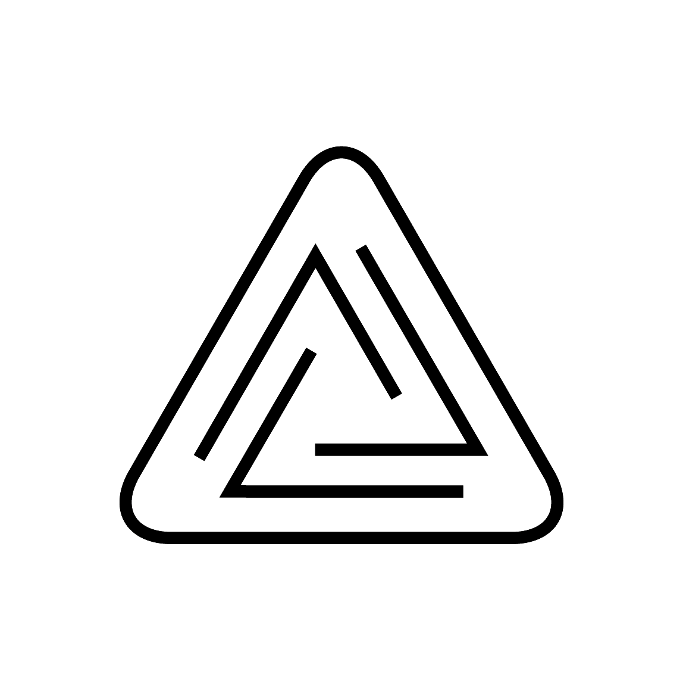

raster:index
Visual Communication for Event
S//IP Club, Nicosia
Branding
Logo
Website Design
Visual Communication for Event
"In the centre of Nicosia emerges something set to fill the void, and push further than ever before; something true to the essence of club culture, where racism, sexism and homophobia do not exist."
Sickle & Code
Branding
Visual Communication
Digital Illustration
Visual Research
Sickle & Code is an international exhibition, part of Phygital, a programme conceptualised for Cyprus by Dr. Chrystalleni Loizidou within the scope of investigating contemporary movements towards a knowledge-sharing economy that reconsiders capitalist definitions of credit, labour and production. More specifically, in Sickle & Code, Cypriot and international artists present works that reflect, confront and re-evaluate current models of producing under the conjunction of global digital commons of knowledge.
The exhibition was accompanied by several parallel events that include makeathons, workshops, tours for schools and art schools, presentations, talks, performances and screenings."
Sickle & Code is organised by the University of Nicosia Research Foundation as part of project Phygital (an Interreg V 2014-2020 BalkanMed, EU-funded programme) and co-organized in collaboration with the University of Nicosia Fine Arts Programme (Department of Design and Multimedia) and the Municipality of Lakatamia. Ιmplementation partner: Thkio Ppalies. Curated by Peter Eramian, Elena Parpa, Evanthia (Evi) Tselika.

Visual Artists Assosiation of Cyprus
Logo Design
The Visual Artists Αssociation (EI.KA) was founded in 2006 in Nicosia by a small group of artists. Today, it represents a large number of professional artists and art theorists, who work for the promotion and progress of art and culture. The aim of the association is to support the rights of artists and to create a legal framework for the status of the artist, including medical care, social security and pension allowance.
Funded by Ministry of Education and Culture
The River Speaks
App Design
UI & UX
Branding
Logo Design
This will be an educational and recreational mobile application on the cultural history of the Pediaios river. It will navigate users along the riverside park from its starting point in downtown Nicosia and will be suitable for use by the general public. It will encourage users to slow down and observe the river environment as well as provide more in-depth information on the history and ecology of the river and its interaction with people through time. The app will include a variety of sensory prompts and activities as well as rich archival visual material.
The mobile application A River Speaks is part of a two-year research project funded by the Sylvia Ioannou Foundation and has been designed by Despo Pasia and Evanthia Tselika
WADS (↑ ← → ↓)
Ars Electronica Festival Austria
Visual Communication for Event
Logo
RISE CoE, with the support of the Austrian Embassy, is proud to be participating in the Ars Electronica Festival 2020 titled “In Kepler’s Gardens”, that will take place between the 9th and 13th of September.
The global circumstances led Ars Electronica to reimagine this year’s festival format. Numerous events organised by its invited partners will be realised at their own locales around the world and will be digitally interconnected. Artists, scientists and audiences will embark on a journey through networked biotopes and ecosystems suggestive of new modes of world-building.
In this spirit and following its own mission, RISE invites local artists to pollinate the digital by employing a technique derived from gardening: namely, grafting. WADS, a digital garden of commoning formed by 21 local artists, sets out to explore the potential of digital hubs as grounds of artistic and technological co-creation. The digital exhibition is created and experienced in the online environment of Mozilla Hubs and will be accessible through the Ars Electronica Digital Platform.
Images & Views of Alternative Cinema Festival
IVAC20
Catalogue Book Design
Visual Communication
Since its very first year, organisers and their associates have sought to showcase experimental cinema, through a truly diverse programme, giving audiences an opportunity to come into contact with the work of different film makers, artistic movements and cinema trends. Their common denominator is the exploration of the aesthetic and formalistic possibilities of audiovisual art, experimentation, social and existential concerns and the questioning of academic film writing. Often, the festival combines film language with other forms of audiovisual expression, such as video-art and animations.
The Festival entitled ‘Images and Views of Alternative Cinema’, is an initiative of the Ministry of Education and Culture and Theatro Ena, in cooperation with the Cultural Organisation Brave New Culture and Point Centre for Contemporary Art. Through its programmes, it aims to highlight experimental and alternative cinematographic expression.
Orbital
Multidisciplinary Performance
At Thkio Ppalies Artists-Led Space
“Orbital” is a multidisciplinary project in which Nico has created sounds out of shapes. By creating a family of symbols, he proposes a language. These symbols are translated into records, one record for each. The combination of these symbols lead to sound-sentences. By playing four of them at the same time on a quadraphonic sound system, a sonic image of this graphical conversation is created.
The performance at Thkio Ppalies lasted for three hours. The crowd was able to walk in and out of the space at any time as the atmosphere was intended for meditation.
Funded by Ministry of Education and Culture
'Rockery'
Piece for 'Pentadaktylos Contemporaries'
exhibition at Leventios Municipal Gallery, Nicosia.
Digital Illustrations
Javascript
"Rockery is a visual research of the 7 Endangered & Endemic
plants of Pentadakylos Mountain range."
All Rights Reserved — 2021